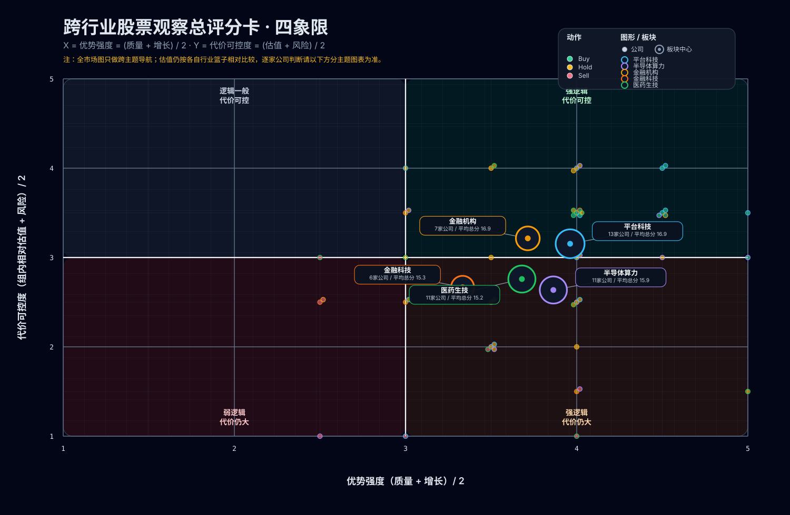

跨行业股票观察总评分卡
Language / 语言: 中文 | English
更新时间：2026-04-16 18:17 CEST 方法页：方法与来源 评分输入：2026-04-16 市场快照（源文件保留在私有研究库）
怎么读这张总表
- 这是跨行业导航表，不是把银行、平台、半导体和制药用单一倍数硬排的“绝对真理榜”。
- 真正的 Buy / Hold / Sell 先在各自行业页里成立，再拿到这里做跨主题优先级排序。
- 日内涨跌只提供弱情绪输入，不足以单独改变动作。
四象限总览

- 小点 = 单家公司；带标签气泡 = 板块中心。
- X 轴 = 优势强度 = (
quality_moat+growth_driver) / 2 - Y 轴 = 代价可控度 = (
valuation_setup+risk_control) / 2 - 越靠右上，代表“优点更强、代价更可控”；越靠左下，代表当前 setup 更弱。
- 注：全市场图里的
valuation_setup仍然是各自行业篮子内的相对分，不是跨行业统一倍数比较。 - 真正的逐家公司可读比较请以下面的分主题图和分主题表格为准。
当前动作分布
- Buy：MSFT, NVDA, APO, AMZN, GOOG, META, TSM, AVGO, V, SOFI, REGN
- Hold：AAPL, MU, JPM, BAC, QCOM, GSK, AMD, BX, PGY, LLY, TXN, GS, HOOD, MRK, MRVL, AFRM
- Sell：ARM, UPST, TSLA, HSBC, CVS, INTC, KLAR, SNDK
全市场总表
| 排名 | 主题 | 公司 | 动作 | 总分 | 质量 | 增长 | 估值 | 情绪 | 风险 | 价格 / 日变动 | 估值抓手 | 说明 |
|---|---|---|---|---|---|---|---|---|---|---|---|---|
| 1 | 平台科技与互联网 | MSFT | Buy | 21 | 5 | 5 | 3 | 4 | 4 | 411.22 / 4.61% | FPE 23.41 / P/S≈9.99 | 企业分发权与 Azure AI 兑现路径最清晰，贵但仍属平台篮子里的高确定性核心位。 |
| 2 | 半导体与基础算力 | NVDA | Buy | 20 | 5 | 5 | 3 | 4 | 3 | 198.87 / 1.20% | FPE 23.90 / P/S≈22.37 | 平台地位最强，即使不便宜也仍是本组最难替代的核心主线。 |
| 3 | 金融机构与资本市场 | APO | Buy | 20 | 4 | 4 | 4 | 5 | 3 | 120.54 / 4.98% | FPE 13.46 / P/S≈2.19 | 永久资本 + 私募信用引擎最完整，当前估值还没贵到失真。 |
| 4 | 平台科技与互联网 | AMZN | Buy | 19 | 5 | 4 | 4 | 2 | 4 | 248.50 / −0.21% | FPE 32.10 / P/S≈3.72 | AWS + 广告 + 零售三飞轮仍在，按平台篮子看估值并不算最挤。 |
| 5 | 平台科技与互联网 | GOOG | Buy | 19 | 5 | 4 | 4 | 3 | 3 | 334.47 / 1.18% | FPE 28.99 / P/S≈10.08 | 搜索现金流给了足够缓冲，Cloud AI 继续改善增长结构，性价比较均衡。 |
| 6 | 平台科技与互联网 | META | Buy | 19 | 5 | 4 | 4 | 3 | 3 | 671.58 / 1.37% | FPE 22.30 / P/S≈8.46 | 广告机器与 AI 效率提升都在兑现，但高 CapEx 与监管让它略低于最稳的平台位。 |
| 7 | 半导体与基础算力 | TSM | Buy | 19 | 5 | 4 | 4 | 3 | 3 | 375.10 / −1.26% | FPE 22.70 / P/S≈14.10 | 先进制造与先进封装底座稀缺，当前估值仍可被地缘折价部分对冲。 |
| 8 | 半导体与基础算力 | AVGO | Buy | 19 | 5 | 4 | 3 | 4 | 3 | 396.72 / 4.19% | FPE 29.53 / P/S≈27.53 | 定制 XPU + 网络双卡位让盈利兑现更直接，集中度高但仍值得排进第一梯队。 |
| 9 | 金融机构与资本市场 | V | Buy | 19 | 5 | 4 | 2 | 3 | 5 | 315.91 / 1.46% | FPE 23.84 / P/S≈14.54 | 质量最好且商业模式最硬，虽然不便宜，但仍是金融篮子里的长期优等生。 |
| 10 | 金融科技与消费信贷 | SOFI | Buy | 19 | 4 | 4 | 4 | 4 | 3 | 18.79 / 4.91% | FPE 31.13 / P/S≈6.69 | 在高风险 fintech 篮子里，平台广度、银行牌照与盈利路径的平衡最好。 |
| 11 | 医药与生物科技 | REGN | Buy | 19 | 4 | 4 | 3 | 4 | 4 | 753.93 / −0.21% | FPE 16.78 / P/S≈5.40 | 平台 biotech 质量高、估值不算离谱，风险回报比优于高预期大药。 |
| 12 | 平台科技与互联网 | AAPL | Hold | 18 | 5 | 3 | 2 | 4 | 4 | 266.43 / 2.94% | FPE 31.08 / P/S≈8.98 | 质量极强但当前更像成熟平台防守位，AI 对换机的再加速还要继续验证。 |
| 13 | 半导体与基础算力 | MU | Hold | 18 | 4 | 4 | 5 | 2 | 3 | 456.23 / −2.03% | FPE 5.13 / P/S≈8.85 | HBM 顺风最明显，但内存的强周期属性决定它更像高质量周期仓而非长期最优解。 |
| 14 | 金融机构与资本市场 | JPM | Hold | 18 | 5 | 3 | 4 | 2 | 4 | 305.93 / −1.67% | FPE 13.86 / P/S≈4.72 | 最稳的大行样本，但监管折价让它更像质量锚而不是最强弹性买点。 |
| 15 | 金融机构与资本市场 | BAC | Hold | 18 | 4 | 3 | 5 | 3 | 3 | 54.32 / 1.82% | FPE 12.00 / P/S≈3.54 | 估值便宜，但质量与盈利弹性仍略逊于 JPM。 |
| 16 | 半导体与基础算力 | QCOM | Hold | 17 | 4 | 3 | 4 | 3 | 3 | 133.05 / 0.16% | FPE 12.74 / P/S≈3.16 | 终端 AI 的赔率不差且估值不贵，但仍要接受它是条件式边缘算力而非中心主线。 |
| 17 | 医药与生物科技 | GSK | Hold | 17 | 4 | 3 | 4 | 2 | 4 | 57.81 / −2.31% | FPE 11.52 / P/S≈2.63 | 价值重估与管线改善都在路上，但还需要继续兑现才能升级到 Buy。 |
| 18 | 半导体与基础算力 | AMD | Hold | 16 | 4 | 4 | 2 | 3 | 3 | 258.12 / 1.20% | FPE 38.58 / P/S≈12.15 | 二号位故事成立，但软件生态与放量兑现还需要继续证明。 |
| 19 | 金融机构与资本市场 | BX | Hold | 16 | 4 | 4 | 2 | 4 | 2 | 130.19 / 3.06% | FPE 21.25 / P/S≈11.26 | 平台广度强，但退出与募资周期反噬时波动也会更直接。 |
| 20 | 金融科技与消费信贷 | PGY | Hold | 16 | 3 | 3 | 5 | 3 | 2 | 14.20 / 9.15% | FPE 4.97 / P/S≈0.90 | 估值与资金顺风给了不错 setup，但合作方与资金来源集中度仍然太高。 |
| 21 | 医药与生物科技 | LLY | Hold | 16 | 5 | 5 | 1 | 3 | 2 | 905.03 / −1.89% | FPE 26.13 / P/S≈12.42 | 成长性最强，但高预期与政策/供给敏感度让当前赔率没有看上去那么轻松。 |
| 22 | 半导体与基础算力 | TXN | Hold | 15 | 4 | 2 | 3 | 2 | 4 | 216.29 / −1.18% | FPE 33.42 / P/S≈11.14 | 质量不错但 AI 弹性不足，更像底仓而不是这组的主攻位。 |
| 23 | 金融机构与资本市场 | GS | Hold | 15 | 4 | 3 | 3 | 2 | 3 | 899.49 / −1.11% | FPE 15.01 / P/S≈4.48 | 顺周期弹性明确，但比较依赖资本市场活跃度回暖。 |
| 24 | 金融科技与消费信贷 | HOOD | Hold | 15 | 4 | 4 | 1 | 4 | 2 | 87.32 / 10.41% | FPE 41.42 / P/S≈17.59 | 用户入口强，但当前价格已经把交易热度与外延想象计入太多。 |
| 25 | 医药与生物科技 | MRK | Hold | 15 | 4 | 3 | 2 | 3 | 3 | 117.90 / −1.72% | FPE 23.03 / P/S≈4.48 | 现金流仍硬，但专利悬崖之后的接棒速度让它只能维持中位排序。 |
| 26 | 半导体与基础算力 | MRVL | Hold | 14 | 3 | 4 | 2 | 3 | 2 | 134.60 / 0.58% | FPE 35.16 / P/S≈14.37 | 高弹性也高集中，赔率不差但性价比仍落后于龙头与底座。 |
| 27 | 金融科技与消费信贷 | AFRM | Hold | 14 | 3 | 3 | 3 | 3 | 2 | 59.62 / 6.81% | FPE 16.47 / P/S≈5.34 | BNPL 位置仍在，但资金成本与信用表现决定它很难进第一梯队。 |
| 28 | 半导体与基础算力 | ARM | Sell | 13 | 4 | 4 | 1 | 2 | 2 | 159.34 / −1.17% | FPE 82.69 / P/S≈36.24 | 稀缺性强，但当前估值把太多好消息提前计入，安全边际偏薄。 |
| 29 | 金融科技与消费信贷 | UPST | Sell | 13 | 2 | 3 | 4 | 3 | 1 | 33.36 / 12.97% | FPE 14.66 / P/S≈2.93 | 短期情绪最热，但资金供给与信用风险仍然压过技术故事。 |
| 30 | 平台科技与互联网 | TSLA | Sell | 12 | 3 | 3 | 1 | 4 | 1 | 391.95 / 7.62% | FPE 193.41 / P/S≈15.50 | 远期期权很大，但汽车现金流与超高估值之间的错配仍是本组最难承受的风险。 |
| 31 | 金融机构与资本市场 | HSBC | Sell | 12 | 3 | 2 | 4 | 2 | 1 | 90.93 / −0.48% | FPE 11.40 / P/S≈4.93 | 地缘与重组变量太多，即便不贵也缺少最好 risk/reward。 |
| 32 | 医药与生物科技 | CVS | Sell | 12 | 3 | 2 | 5 | 1 | 1 | 74.99 / −3.39% | FPE 10.47 / P/S≈0.24 | 看起来不贵，但政策、赔付率与 PBM 风险把它压成这组最弱的 risk-adjusted setup。 |
| 33 | 半导体与基础算力 | INTC | Sell | 11 | 2 | 3 | 1 | 4 | 1 | 64.94 / 1.77% | FPE 125.25 / P/S≈6.17 | 转型赔率大，但产品、制造与资本开支三重执行难度仍是本组最高。 |
| 34 | 金融科技与消费信贷 | KLAR | Sell | 11 | 3 | 3 | 1 | 2 | 2 | 14.86 / 4.21% | FPE 227.25 / P/S≈1.60 | 品牌心智不错，但盈利可见度与估值的匹配度仍偏弱。 |
| 35 | 半导体与基础算力 | SNDK | Sell | 9 | 2 | 2 | 2 | 1 | 2 | 891.72 / −5.58% | FPE 9.97 / P/S≈14.74 | 更像 NAND 周期票而非 AI 主线，独立样本期也还太短。 |